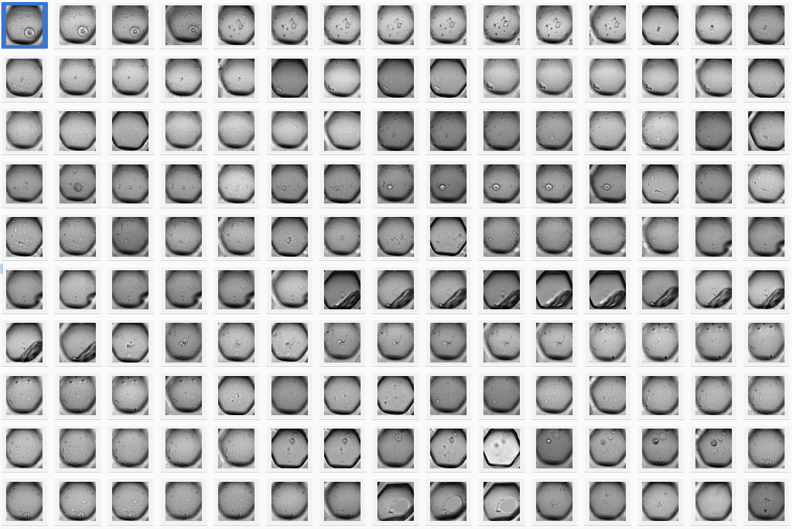

Training a (YOLO) object detector using data from OMERO#
In this tutorial, you will learn how to use OMERO and YOLO in conjunction to train an object detector and classifier. But first off, before we start - all data used in this tutorial is available on Zenodo under a CC-BY 4.0 license. Now to OMERO and YOLO - what are they and why are they useful?
OMERO#
OMERO - short for open microscopy environment remote objects is a widely used data management platform for image data in the life sciences. It allows you to store, organize, and analyze your images in a secure and scalable way. OMERO is open-source and can be easily extended and integrated with other tools and software.
YOLO#
YOLO - short for you only look once is a class of continuously evolving object detection algorithms. YOLO is known for its speed and accuracy and is widely used in computer vision applications. YOLO is open-source and has been implemented in many programming languages and frameworks. It can be used for a variety of applications such as object detection, object classification, tracking or pose estimation - but I think one of the most bread-and-butter applications is still object detection. Contrary to many common segmentation algorithms in bio-image analysis, it does not seek to classify every pixel, but rather to predict bounding boxes around objects of interest.
This already brings forth one of the key advantages of using YOLO for bio-medical image segmentation, especially in instance segmentation problems: Pixel classification, without an additional post-processing step is unable to split pixels into different objects - YOLO does this very natively. A typical result of a YOLO model could look like this:

Images © 2022 Johannes Soltwedel. All rights reserved.
Getting started#
It all starts with a fresh environment. If you don’t have Python installed on your machine installed yet, follow this tutorial by Mara Lampert to get everything up and running. You can omit the last step of the tutorial, as we will be creating a different environment.
To do so, bring up your miniforge prompt and create a new environment:
conda create -n omero-yolo python=3.9 ezomero tensorboard scikit-image scikit-learn tqdm ultralytics -c bioconda
conda activate omero-yolo
Note
Conda or mamba? If you are working with a fresh python installation done according to the tutorial, then using conda will be fine. If you are using an older version and were used to mamba, you can use mamba instead of conda. The syntax is the same. You can upgrade your conda installation for conda to be as fast as mamba by following these instructions.
Since training this kind of model is using deep learning, we will need to use a CUDA-capable (NVIDIA-manufactured) graphics card. Unfortunately, this is a key requirement for this tutorial. To install the necessary packages (i.e., pytorch), run the following command:
conda install pytorch torchvision pytorch-cuda=12.4 -c pytorch -c nvidia
Note
Note: The installation may differ depending on your OS or driver version. To make sure everything runs, update your drivers to the latest version and check out the pytorch-homepage for the correct installation instructions.
Getting data from omero#
Now where does OMERO come into play? Essentially, OMERO can serve as a super-easy tool to do annotations on your images - you can even do so collaboratively. In this example, the data we will work with, looks like this:

…and this is just a small snippet of the data. The entire dataset comprises more than 1500 images of this kind. What exactly we are looking at is not very important, but the job we’ll want to do is essentially this: Detect different objects (cells and spheroids) in each image of a multi-well plate. For reference, these are the objects we are searching for:
Cells |
Spheroids |
|---|---|
Annotation#
This brings us to an important step, which one would like to avoid in deep learning if possible, but it’s a necessary evil: Annotation. In this case, we will use OMERO to annotate the images. The simplest way to go at this in OMERO, is to just draw bounding boxes and write in the comment what sort of object it is. This is a very simple and straightforward way to do this. Unfortunately, OMERO does not (yet?) support simply tagging ROI (regions of interest) with labels, so we have to do this manually:

Still you can apprecciate that this is much faster than doing this in a local image viewer and then saving the annotations in a separate file, let alone annotating single pixels. Still, it’s a bit cumbersome so the question of how much annotations are enough annotations naturally arises. Read more on the subject in the respective section below.
Note
Consistency in the naming here is super-important. Make sure to stick to your conventions (i.e., avoid using “cell”/”cells”/”Cell” in the same dataset).
Training the model#
Before we can actually proceed to train a model, we need to make the dataset available to us on our local machine. For this, we will use the excellent ezomero package you already installed. Let’s write some code!
import ezomero
import tqdm
import shutil
import os
from skimage import io
from ultralytics import YOLO
import matplotlib.pyplot as plt
from sklearn.model_selection import train_test_split
We check whether pytorch has been installed correctly:
import torch
torch.cuda.is_available()
host = # the address of your omero server
user = # your username
secure = True
port = 4064
group = # the group you want to connect to (set to None if you want to connect to the default group)
conn = ezomero.connect(host=host, user=user, secure=secure, port=port, group=group)
We first need all images and the corresponding annotations in the dataset. This could take a litle as we are sending A LOT of requests to the server. We create ourselves a directory (change the path to your liking) where we save the images and the labels from the OMERO server.
working_directory = r'E:\BiAPoL\yolo_demo\dataset' # the directory where you want to save the dataset - replace with your own directory
images_dir = os.path.join(working_directory, 'images')
labels_dir = os.path.join(working_directory, 'labels')
os.makedirs(images_dir, exist_ok=True)
os.makedirs(labels_dir, exist_ok=True)
Now on to actually downloading - here we have to invest a bit more thought. Why? OMERO and YOLO have different definitions on how a bounding box is defined. The image below illustrates this:
OMERO |
YOLO |
|
|---|---|---|
Anchor |
||
Units |
Pixels |
Normalized |
Images © 2022 Johannes Soltwedel. All rights reserved.
To be compliant with YOLO conventions, we need to convert our annotations into the following format and normalize the positions and sizes of the bounding boxes to the width and height of the image:
class_label1 x_center y_center width height
class_label2 x_center y_center width height
...
First, we need to convert the wrtten class labls (e.g., “cell” or “spheroid”) into numerical labels. We can do this by creating a dictionary that maps the class labels to numerical labels:
object_classes = {
'cell': 0,
'compacted': 1,
'spheroid': 2,
'dead': 3,
}
Downloading the dataset#
Now we iterate over all the images in the dataset, retrieve the corresponding rois a(and the shapes they contain - honestly, I don‚Äôt fully understand the difference between Shapes and ROIs in OMERO üòÖ). Anyway, we then convert the annotations to YOLO format. This means dividing all coordinates by the width and height of the image as well as adding half the width and half the height to the coordinates of the anchor of the box to move it from the upper-left corner to the center.
In the following code, you see image data being imported from `dataset=259` - replace this with the id of the dataset that yu are actually working with.
img_ids = ezomero.get_image_ids(conn, dataset=259) # replace 259 with the id of the dataset you want to use
for img_id in tqdm.tqdm(img_ids):
# get the image and metadata and save the image locally
metadata, image = ezomero.get_image(conn, image_id=img_id, dim_order='tczyx')
image_filename = os.path.join(working_directory, 'images', f'{metadata.name}.png')
labels_filename = os.path.join(working_directory, 'labels', f'{metadata.name}.txt')
image = image.squeeze() # remove singleton dimensions (TCZ)
io.imsave(image_filename, image.squeeze())
# determine the width and height of the image and get associated rois
width, height = image.shape[1], image.shape[0]
roi_ids = ezomero.get_roi_ids(conn, image_id=img_id)
shapes = []
for roi_id in roi_ids:
shape_ids = ezomero.get_shape_ids(conn, roi_id=roi_id)
for shape_id in shape_ids:
shapes.append(ezomero.get_shape(conn, shape_id=shape_id))
# now to convert the shapes to YOLO format
with open(labels_filename, 'w') as f:
for shape in shapes:
w = shape.width / width
h = shape.height / height
x = shape.x / width + w / 2
y = shape.y / height + h / 2
class_id = object_classes[shape.label]
f.write(f'{class_id} {x} {y} {w} {h}\n')
100%|██████████| 1615/1615 [29:28<00:00, 1.10s/it]
Before we dive into the training, we have to do one final step. It is common practice in deep learning, to split the data into a training, validation and a testing cohort. This is done to evaluate the model on data it has not seen before. We will do a 70/20/10% split for training, validation and testing, respectively. We first create the folder structure:
# Output directories
output_dirs = {
'train': {'images': os.path.join(working_directory, 'train/images'), 'labels': os.path.join(working_directory, 'train/labels')},
'val': {'images': os.path.join(working_directory, 'val/images'), 'labels': os.path.join(working_directory, 'val/labels')},
'test': {'images': os.path.join(working_directory, 'test/images'), 'labels': os.path.join(working_directory, 'test/labels')}
}
# Create output directories if they don't exist
for key in output_dirs:
os.makedirs(output_dirs[key]['images'], exist_ok=True)
os.makedirs(output_dirs[key]['labels'], exist_ok=True)
We then sort our images and labels into these folders. For thi we set the random seed to a fixed value (random_state=42) for reproducibility:
# Get list of all image files
image_files = [f for f in os.listdir(images_dir) if os.path.isfile(os.path.join(images_dir, f))]
# Split the dataset into train, val, and test
train_files, test_files = train_test_split(image_files, test_size=0.30, random_state=42)
val_files, test_files = train_test_split(test_files, test_size=1/3, random_state=42) # 1/3 of 30% => 10%
# Move the files to the respective directories
for key, files in zip(['train', 'val', 'test'], [train_files, val_files, test_files]):
for file in files:
image_file = os.path.join(images_dir, file)
label_file = os.path.join(labels_dir, file.replace('.png', '.txt'))
shutil.copy(image_file, output_dirs[key]['images'])
shutil.copy(label_file, output_dirs[key]['labels'])
print('Number of samples in training set:', len(train_files))
print('Number of samples in validation set:', len(val_files))
print('Number of samples in test set:', len(test_files))
Number of samples in training set: 1071
Number of samples in validation set: 306
Number of samples in test set: 153
Training#
Now for the cool part of all deep-learning frameworks: The training. Luckily, YOLO makes this quite easy! (Also see the documentation on further hints and settings). Before we can start the training, we need to set a few configuration parameters. YOLO requires us to write this in a separate yaml file, which in our case would look something like this.
Note
Make sure to replace path in the yaml file with the path to your dataset.
# Train/val/test sets as 1) dir: path/to/imgs, 2) file: path/to/imgs.txt, or 3) list: [path/to/imgs1, path/to/imgs2, ..]
path: E:/BiAPoL/yolo_demo/dataset # dataset root dir
train: train/images # train images (relative to 'path') 128 images
val: val/images # val images (relative to 'path') 128 images
test: test/images # test images (optional)
names:
0: cell
1: compacted
2: spheroid
3: dead
For the training, we use a pretrained model. This means that the model has already been trained on a variety of image data (unlike ours, of course), but it is likely already able to distinguish basic shapes.
model = YOLO("yolov8n.pt")
We start the training and we add a few parameters to the training run. They are all explained in more detail here, but here’s a quick glance:
imgsz: In order to stack images to batches, yolo needs to reshape them into a common shape, which is defined by this parameter. Since our images are quite small themselves, we can set this to a small value, e.g., 128. The value needs to be a potence of 2.batch: Number of images in one batch. The bigger your GPU, the bigger this number can be. For a 8GB GPU, 64 is a good starting point.epochs: Number of epochs to train the model. Longer training typically goes hand in hand with better performance, but also with overfitting.flipud,fliplr,degrees: These parameters are used to augment the data. Augmentation is a technique to artificially increase the size of the dataset by applying transformations (flipping, rotations, etc) to the images. This can help the model to generalize better and prevent overfitting. The values given for these parameters are the probabilities that the transformation is applied to an image.dropout: Controls whether certain neurons (part of the neuronal network) are “dropped out” (muted) during training, which corresponds to the network temporarily forgetting what it has learned. This can help to prevent overfitting as the network learns not to overly rely on certain neurons.plots: Plots some metrics.seed: Removes the randomness from the training process. This is useful if you want to reproduce the results of a training run.
Anyway - read the docs and play around with the parameters to see what works best for your data.
Tensorboard#
If you don’t want to look at endless rows of text in your Jupyter notebook, but rather look at a fancy dashboard, you can use tensorboard to visualize the training process. If you followed the instructions above, you already installed tensorboard. You can start tensorboard by running the following command in your terminal:
cd path/to/where/this/notebook/is
tensorboard --logdir=runs
If you are using VSCode, use the built in tensorboard extension by just hitting Ctrl+Shift+P and typing tensorboard and then selecting the folder runs.
Enough with the talk - Let’s start the training!
model.train(data="./detection.yaml", epochs=100, imgsz=128, device=0, batch=64, flipud=0.5, fliplr=0.5,
dropout=True, optimizer='Adam', seed=42, plots=True)
Lucky for us, YOLO runs a few tests before training starts which we can use to make sure whether we actually got all the classes and the x/y width/heigth conversion stuff right. Starting the training will spawn a folder called runs adjacent to this notebook. In this folder, we find an overview of several samples along with our bounding box annotations.
We are also shown an overview over our input annotations. We essentially see, that we are providing a huge number for the object class cell, but hardly any for the other classes in comparison. We also see that all labels are sort of square (top right), as also shown by the 2d histogram on the bottom-right:
Evaluation#
Once the training is done, we should have a look at some of the metrics yolo generates for us. For instance, we are shown some predictions and the corresponding ground truth labels. This is a good way to see how well the model is doing.
Labels |
Predictions |
|---|---|
At a glance - not half-bad, right? Besides just looking at the predicted bounding boxes we can - and we also should - look at some metrics. What’s very important here, is the confusion matrix produced by the training, which essentially tells us how well the model is doing in terms of precision and recall.
Counts |
Normalized |
|---|---|
From this we learn that our model is rather mediocre at detecting the cell class: In the normalized confusion matrix, we see that the True positive rate is about 50% for the cell class, whereas the model often (42%) predicts background (no object) where we annotated a cell. Interestingly, the model often predicts cells where the annotator only saw background.
For the spheroids, we are quite good at finding them, with a true positive rate of 84%. There is one way, of course to improve performance:
Annotate more data!
But that’s a story for another day. For now, we have a working model that can detect cells and spheroids in our images.
Applying the model#
Lastly, if you want to apply the model on some new data, this can be done fairly easily with YOLO. In a real applciation, replace list_of_other_images with a list of paths to your images. Yolo automatically saves two model checkpoints for us to use: The best model and the last model. Obviously, we’ll want to use the best model.
model = YOLO("./runs/detect/train/weights/best.pt")
list_of_other_images = [os.path.join(output_dirs['test']['images'], f) for f in test_files]
results = model(list_of_other_images)
Speed: 0.3ms preprocess, 1.4ms inference, 1.3ms postprocess per image at shape (1, 3, 128, 128)
…and that’s already it. The last thing we will cover in this tutorial is how to get the predictions and convert them back into something that OMERO could understand. This is a bit more tricky, as we have to convert the normalized bounding boxes back into pixel coordinates. This can be done by multiplying the x/y coordinates with the width and height of the image.
Let’s look at a single example image (e.g., well_102_t0_x2671.34_y1437.11.png) and see what the predictions return
test_image = os.path.join(output_dirs['test']['images'], 'well_102_t0_x2671.34_y1437.11.png')
prediction = model([test_image])
0: 128x128 7 cells, 20.5ms
Speed: 2.0ms preprocess, 20.5ms inference, 6.0ms postprocess per image at shape (1, 3, 128, 128)
There’s a bunch of stuff inside the prediction object. What we are looking for is stored in the boxes attribute. We can see that yolo offers us the result in a buch of different formats (boxes.xywh, boxes.xywhn, boxes.xyxy, boxes.xyxyn). We are interested in the xywh format, as this is already given in pixel units. The classes of the respective boxes are stored in the boxes.cls attribute.
prediction[0].boxes
ultralytics.engine.results.Boxes object with attributes:
cls: tensor([0., 0., 0., 0., 0., 0., 0.], device='cuda:0')
conf: tensor([0.6708, 0.6405, 0.5541, 0.3947, 0.3710, 0.3266, 0.2758], device='cuda:0')
data: tensor([[60.0439, 64.5733, 69.9621, 75.9605, 0.6708, 0.0000],
[83.5776, 55.0671, 95.6779, 67.8791, 0.6405, 0.0000],
[57.3633, 83.5636, 66.9192, 94.2983, 0.5541, 0.0000],
[76.0216, 63.1894, 85.6686, 74.9451, 0.3947, 0.0000],
[76.0707, 53.7196, 86.5719, 65.4781, 0.3710, 0.0000],
[67.7796, 76.9948, 79.4629, 87.6710, 0.3266, 0.0000],
[57.3487, 73.0762, 65.8421, 82.4596, 0.2758, 0.0000]], device='cuda:0')
id: None
is_track: False
orig_shape: (146, 136)
shape: torch.Size([7, 6])
xywh: tensor([[65.0030, 70.2669, 9.9182, 11.3872],
[89.6277, 61.4731, 12.1003, 12.8120],
[62.1412, 88.9310, 9.5560, 10.7346],
[80.8451, 69.0672, 9.6470, 11.7557],
[81.3213, 59.5988, 10.5012, 11.7585],
[73.6213, 82.3329, 11.6833, 10.6762],
[61.5954, 77.7679, 8.4934, 9.3834]], device='cuda:0')
xywhn: tensor([[0.4780, 0.4813, 0.0729, 0.0780],
[0.6590, 0.4210, 0.0890, 0.0878],
[0.4569, 0.6091, 0.0703, 0.0735],
[0.5944, 0.4731, 0.0709, 0.0805],
[0.5980, 0.4082, 0.0772, 0.0805],
[0.5413, 0.5639, 0.0859, 0.0731],
[0.4529, 0.5327, 0.0625, 0.0643]], device='cuda:0')
xyxy: tensor([[60.0439, 64.5733, 69.9621, 75.9605],
[83.5776, 55.0671, 95.6779, 67.8791],
[57.3633, 83.5636, 66.9192, 94.2983],
[76.0216, 63.1894, 85.6686, 74.9451],
[76.0707, 53.7196, 86.5719, 65.4781],
[67.7796, 76.9948, 79.4629, 87.6710],
[57.3487, 73.0762, 65.8421, 82.4596]], device='cuda:0')
xyxyn: tensor([[0.4415, 0.4423, 0.5144, 0.5203],
[0.6145, 0.3772, 0.7035, 0.4649],
[0.4218, 0.5724, 0.4921, 0.6459],
[0.5590, 0.4328, 0.6299, 0.5133],
[0.5593, 0.3679, 0.6366, 0.4485],
[0.4984, 0.5274, 0.5843, 0.6005],
[0.4217, 0.5005, 0.4841, 0.5648]], device='cuda:0')
Also note, that the values shown for the box anchors say device='cuda:0'. This means, that the data is still on the GPU. To use it, we need to detach it from the GPU, move it to the CPU and convert it from a pytorch tensor to a numpy array:
for obj_class, box in zip(prediction[0].boxes.cls, prediction[0].boxes.xywh):
print(f'Object class: {int(obj_class)}, Box: {box.detach().cpu().numpy()}')
Object class: 0, Box: [ 65.003 70.267 9.9182 11.387]
Object class: 0, Box: [ 89.628 61.473 12.1 12.812]
Object class: 0, Box: [ 62.141 88.931 9.556 10.735]
Object class: 0, Box: [ 80.845 69.067 9.647 11.756]
Object class: 0, Box: [ 81.321 59.599 10.501 11.759]
Object class: 0, Box: [ 73.621 82.333 11.683 10.676]
Object class: 0, Box: [ 61.595 77.768 8.4934 9.3834]
Moving the data back to OMERO#
To come full circle, here’s a quick glance on how to move the images along with the predictions back to OMERO. Luckily for us, ezomero makes this relatively straightforward:
swapped_object_classes = {value: key for key, value in object_classes.items()}
rectangles = []
for obj_class, box in zip(prediction[0].boxes.cls, prediction[0].boxes.xywh):
box_numpy = box.detach().cpu().numpy()
x = box_numpy[0] - box_numpy[2] / 2
y = box_numpy[1] - box_numpy[3] / 2
width = box_numpy[2]
heigth = box_numpy[3]
rectangles.append(ezomero.rois.Rectangle(x, y, width, heigth, label=swapped_object_classes[int(obj_class)]))
Lastly, we could upload this image and the corresponding predictions to a new dataset in OMERO. Note that the image has to be converted in 5d (in our case, we set the format to tczyx) to be compatible with OMERO.
Note
The steps up to this point can take a bit of time so you may have to reconnect to the omero server.
image_to_upload = io.imread(test_image)
image_id = ezomero.post_image(
conn, image=image_to_upload[None, None, None, :], dim_order='tczyx',
dataset_id=260, image_name='example_prediction'
)
roid_id = ezomero.post_roi(conn, image_id=image_id, shapes=rectangles)
If we check on our OMERO server we see our predictions:
Final thoughts#
That’s it! This is quite a lengthy tutorial, so props if you made it all the way here.
Used data#
All the data used in this tutorial is publically available at the courtesy of Louis Hewitt (Grapin-Botton Lab, MPI-CBG, Dresden, Germany). Without their collaboration, you wouldn’t be able to look at this tutorial. So, thank you!
The bespoke data comes as a packed up OMERO project. You can use it by downloading the stored zip file and using the omero-cli-transfer package to upload it to your OMERO server and then walk yourself through this tutorial from the start. To do so, log into omero from the command line like this:
omero login -s <your_omero_server> -u <your_username> -g <your_group>
Then you can upload the jar file to your server:
omero transfer unpack <path_to_zip_file>
Licenses#
You have seen that the syntax to set up the training for the yolo model is exceptionally easy, which is a huge strongpoint for yolo - not to mention that the model is quite fast and accurate. A grain of salt for using yolo is its AGPL license, which introduces quite strict requirements if you use it in your project. If you are planning to use yolo in a commercial project, you need to contact the developers for a proper license. For a more comprehensive overview of the licenses, check out Robert Haase’s slides on the subject.
How much training data is enough?#
That’s a question that is hard to answer. According to the yolo docs on the subject, some 100 annotated images and training for 100 epochs can be enough to get started - consider annotating (order of magnitude) 1000s of images per class for a more robust model.
Usage scenarios#
There is one obvious downside to yolo: It works 2D only, and biological data can often be of arbitrary dimension (3D, multi-channel, timelapse, etc). However, YOLO can still be an interesting option for a variety of tasks in the biomedical context. Interesting applications can, for instance, arise in the context of high-throughput analysis in a smart-microscopy setup. In this case, a microscope may want to determine automatically whether it is worth keeping the data it acquired or not. To achieve this, maximum projections could be acquired and yolo used to determine whether the image contains interesting structures or not.
Another limitation of predicting bounding boxes is, well, the bounding box itself. Biological objects are typically not square. However, using results of a bounding box prediction, one could use segment-anything to refine the prediction. For usage in bio-image analysis, make sure to check out micro-sam.
Anyway - thanks for reading and happy coding! üíªüöÄ